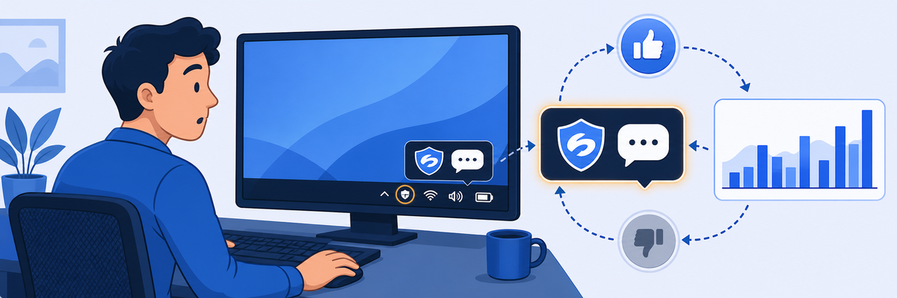
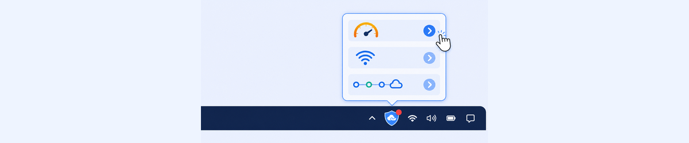
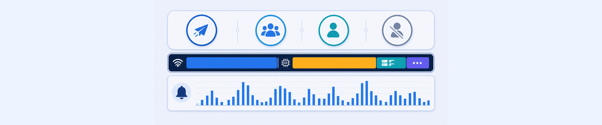
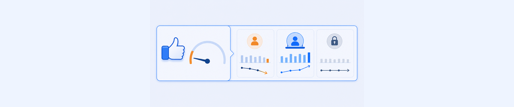
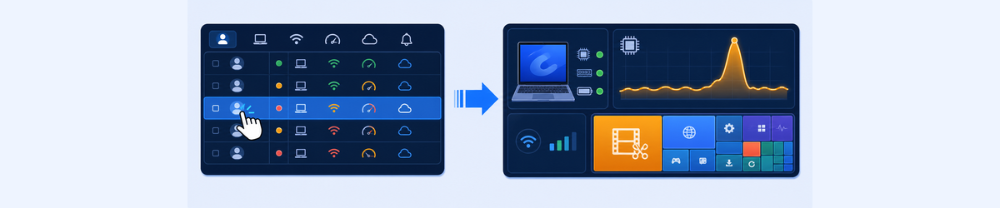

Self Service shifts the resolution model: instead of waiting for a user to file a ticket, ZDX notifies the user in real time via the Zscaler Client Connector tray app. The administrator role is to configure thresholds and monitor adoption, not to handle every case reactively.
- ZDX sends CPU and Wi-Fi notifications directly to users via the Zscaler Client Connector tray app. What are two situations where this self-service approach would not work and you would still need helpdesk involvement?
- The Self Service Dashboard shows "Users Found Notifications Helpful = 0" even with 187 notifications sent. What does this tell you about the notification configuration or user experience?
- The Notification Type for one row is
sel_pengine_download_fail. Without looking it up, what would you infer this notification type means, and what would you do to investigate?
Lab 9: Monitoring Self Service Notifications
Scenario: Your organisation has enabled ZDX Self Service Notifications to proactively notify users of CPU and Wi-Fi issues. Review the Self Service Dashboard to understand notification volume, user feedback, and device health data behind notifications.

Task 9.1: View End User Self Service Demonstration
1 Watch the Self Service Animation
- Click the link to view the End User Self Service Demonstration animation (opens in a new browser tab).
- Note the following activities shown in the animation:
- Notification of High Resource Consumption appears via the Zscaler application in the Windows tray.
- User opens Zscaler Client Connector and views the Notifications page.
- User clicks the Learn More link to see details and recommended actions.
- User provides feedback on whether the recommendations were helpful.
- Close the tab and return to this lab guide.
Note: The animation is a GIF that loops. After watching, close the tab to continue.

Task 9.2: View Self Service Dashboard
2 Review Notification Statistics
- In the ZDX Admin Portal, click Dashboard › Self Service Dashboard.
- View the Total Notifications Sent count in the selected time range.
- Review the Notifications By Types (Wi-Fi, CPU, Other).
- Scroll through the Notifications Sent table to see individual user notifications.
Note: If no notifications are shown, select a longer time interval (e.g. All Hours).

Task 9.3: View User Feedback Summary
3 Review Feedback Statistics
- Review the Users Found Notifications Helpful count and percentage.
- Mouse-over the information icon to see the tooltip about the percentage value and trend.
- Review Active Users With Self Service Enabled and Users Who Disabled Notifications counters.

Task 9.4: View User Device Health for a Notification
4 Drill Into a Notification Event
- In the Notifications Sent table, click the Username for a row where the Notification Type is System High CPU.
- Scroll up to view the Device Health section for that user.
- View the Top Processes by CPU Incidents chart.
- Click on the application with the highest indicated CPU usage to see a trend graph for that application.
Result: Clicking the notification event switches the view to a user report for the time period of the notification. The CPU Usage and Top Processes data confirms what triggered the notification.
